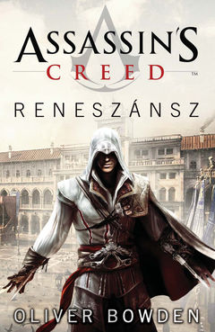

Assassin's Creed: Reneszánsz
Összefoglaló
Bosszút állok mindazokon, kik elárulták családomat. A nevem: Ezio Auditore da Firenze. Asszaszin vagyok... Egy bosszúszomjas fiatalember eposzi méretű küldetésre indul, miután Itália uralkodó dinasztiái elárulták őt. Ám ahhoz, hogy visszaállítsa családja becsületét, és véget vessen hazája romlásának, ki kell tanulnia az orgyilkosok mesterségét. Miközben a szabadságért és az igazságért harcol, Ezio útját olyan kiváló elmék segítik, mint Leonardo da Vinci és Niccolò Machiavelli, akik - mint koruk legbölcsebb gondolkodói - beavatják a túlélés fortélyaiba. Társai számára Ezio fogja megtestesíteni az erőt, mely elsöpri a régit, és újat hoz a helyébe. Ellenségei szemében pedig fenyegető jelképpé válik, kinek rendeltetése, hogy eltiporja a zsarnokságot, mely Itália népét sanyargatja. Kezdődjék a hatalom, az összeesküvés és a bosszú örök színjátékának reneszánsz krónikája. Hiszen az igazságot vérrel írják.

Gyorstalpaló
Az Assassin's Creed: Reneszánsz egy az Assassin's Creed sorozaton alapuló regény, a könyv az Assassin's Creed II feldolgozása, azonban ez a mű csak a 15. és a kora 16. században játszódik, és nem tesz említést a játék modern kori eseményeiről.